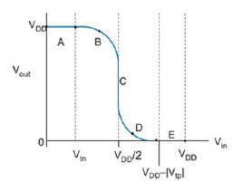

定性论述 · 第 3 章 · 依据已有定性题整理
本题涉及的概念
VTC五区及夹断、速度饱和的区分
正常供电下，输入由低到高，典型五区依次为：截止线性、饱和线性、两管饱和、线性饱和、线性截止。饱和还须根据过驱动与临界速度饱和电压区分夹断饱和和速度饱和。
定性论述题
画出反相器的电压传输特性（）曲线，并在曲线上严格标出两个晶体管的工作区，给出理论依据。如果考虑速度饱和效应，工作区应如何划分？


参考答案与评分要点
考试作答
先写两管端电压：，。常规五区从低输入到高输入依次为截止线性、饱和线性、两管饱和、线性饱和、线性截止。长沟道边界分别由和与相交确定。考虑速度饱和时，先判开启，再分别比较过驱动、漏源电压和正的临界速度饱和电压：漏源电压最小时线性；过驱动先达到限制时夹断饱和；临界电压先达到限制时速度饱和。不能把所有饱和区简单改名，也不能把所有分界放在。
评分要点
- 五区顺序
- 正确端电压和边界
- 区分夹断与速度饱和
- 不假造具体区间数值
为什么这样回答
两个器件各有开启和限流条件，先分开判断再组合，才不会被示意图的对称外观误导。
出处与回查
PPT/chapter3-inverter01-static behavior-T 20261011.pdf· PDF 第 4、9、10、11、12、18 页考试相关/复习题/复习题.pdf· PDF 第 1 页
关联题目：